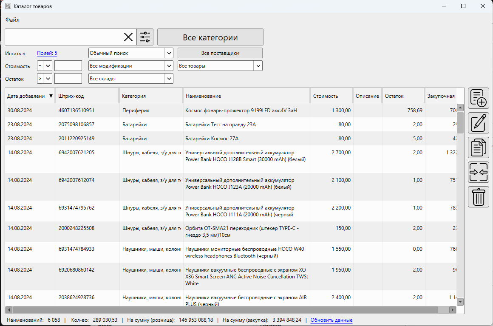
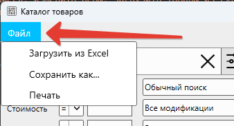
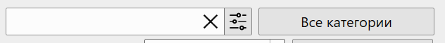
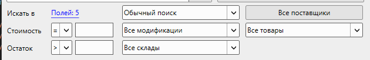
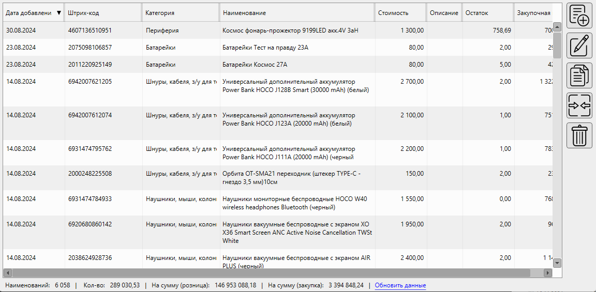
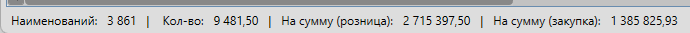
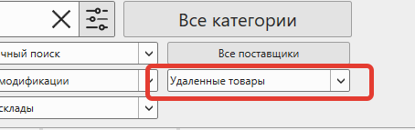
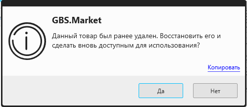

Каталог товаров – это раздел в программе, в котором происходит управление номенклатурой и ассортиментом товаров, продаваемых в торговой точке. В каталоге можно создать новые товары, отредактировать имеющиеся, изменить цены, загрузить товары из Excel и т.п.

Открыть форму поиска можно, например, с главной формы, нажав в меню Товары – Каталог товаров.
Информация
Доступ к каталогу товаров, а так же отдельные действия с товарами могут быть ограничены правами доступа.
Видео-урок
Меню

Файл
- Загрузить из Excel – открывает форму для выбора документа Excel и установки параметров загрузки товаров из Excel
- Сохранить как… – позволяет сохранить содержимое каталога в Excel или CSV файл
- Печатать – позволяет распечатать содержимое каталога товаров, например, сделать прайс-лист
Полезные материалы
Блок "поиск"

Поле "поиск"
Поле "поиск" предназначено для ввода поискового запроса. Например, можно ввести название товара, его артикул, штрихкод или значение любого дополнительного поля товара. Поиск будет осуществляться по тем полям, которые выбраны в фильтре поиска.
Категории
При нажатии на кнопку "категории" можно выбрать одну или несколько категорий. Товары в списке будут отображены только те, которые входят в выбранные категории (группы).
Фильтр поиска

Искать в ...
Раздел позволяет выбрать поля, по которым производится поиск по значению, введенному в поисковой строке.
Например, вы можете включить поиск по названию и штрихкоду, но отключить поиск по дополнительным свойствам товаров.
Видео-урок
Тип поиска
Тип поиска определяет логику сопоставления значения поля и поисковой строки.
Поиск всегда регистронезависимый, т.е. строки
- настройка оборудования
- Настройка ОБОРУДОВАНИЯ
- НаСтРоЙка ОбОРудоваНия
будут считаться одинаковыми.
Полное совпадение
Если выбран данный вариант, то значение полей (по которым включен поиск) должно полностью соответствовать значению в поисковой строке.
Например, если товар называется "Куртка красная", то он будет найден только по запросу "куртка красная", но не будет найден по запросу "куртка".
Такой тип поиска удобнее использовать для поиска по дополнительным полям.
Обычный поиск
Если выбран данный вариант, то значение полей (по которым включен поиск) должно содержать все слова из поискового запроса. Под словом подразумевается набор символов, отделенных от другого набора пробелом. Порядок слов в поисков запросе не играет роли.
Например, по запросу "космос синий гирлянда" будет найден товар "Гирлянда – занавес Космос цвет синий 2,5*1,1 метра".
Неточное совпадение
Если выбран данный вариант, то результат поиска будет выдавать товары, у которых значение максимально близки к поисковому запросу. При этом поисковый запрос может содержать ошибки в написании.
Например, по запросу "кранштеин" будет найден товар "Кронштейн для ТВ наклонно-поворотный MART S366"
Информация
Для поиска значений используется алгоритм "Расстояние Левенштейна".
Стоимость
Для поиска товаров с определенной розничной ценой выберите способ сравнение (больше, меньше, равно) и укажите значение цены.
В результате будут показаны товары, у которых хотя бы для одного остатка цена будет равна указанной.
Стоит учесть, что в списке можно увидеть товары, у которых стоимость отличается от указанной в поле ввода. Это может произойти тогда, когда у товара есть несколько остатков с разной ценой. Т.е. товар имеет остаток с указанной стоимостью, но в списке будет отображаться максимальная из цен.
Например, в фильтре "стоимость" будет указано значение "= 890". В нем может отобразиться товар с ценой 900. Если открыть карточку такого товара, будет видно, что у него на остатке 2 позиции с ценой 890 и 900. Следовательно, он должен попасть в результаты поиска.
Очистите значение поля, чтобы искать товары с любой ценой.
Остаток
Для поиска товаров, с определенным остатком можно указать значение в поле "остаток". Например, нужно найти все товары, которые есть на остатке. Тогда для поля "остаток" необходимо указать фильтр "> 0".
Очистите значение поля, чтобы найти товары с любым остатком.
Поставщики
При выборе поставщика в списке товаров будут отображены те товары, которые когда-либо поступали товары от выбранного поставщика. При этом эти же товары могли поступать и от других поставщиков.
Дополнительный фильтр
В дополнительном фильтре доступны на выбор варианты:
- Все товары – товары не будут фильтроваться по какому-то дополнительному свойству
- Одинаковый ШК – будут показаны те товары, для которых есть дубликаты по штрихкоду
- Одинаковое название – будут показаны товары, для которых есть дубликаты по названию
Склад
Выбор склада для поиска товаров. В результате поиска будут отображены только те товары, у которых есть остатки на указанном складе.
Список товаров

В списке отображаются товары, которые попали под введенный поисковый запрос. Если параметры поиска не указаны – будут показаны все товары из базы данных.
Полезные материалы
Добавить
Кнопка "Добавить" Нажмите на кнопку, чтобы создать новый товар
Нажмите на кнопку "добавить", чтобы создать новый товар. Будет открыта карточка товара, для указания его параметров.
Если поле "поиск" заполнено, то значение этого поля будет указано в карточке товара в поле "название".
Если выбрана одна категория для фильтрации, то в карточке создаваемого товара эта категория будет указана как категория создаваемого товара.
Редактировать
Кнопка "Редактировать" Нажмите на кнопку, чтобы изменить выбранный товар
Чтобы изменить товары, выберите необходимый элемент в списке и нажмите кнопку "редактировать".
Откроется карточка товара для редактирования.
Полезные материалы
Создать копию
Кнопка "Создать копию" Нажмите на кнопку, чтобы создать копию выбранных товаров
Чтобы создать копию, выберите один или несколько товаров и нажмите кнопку "создать копию".
При копировании будут созданы новые товары с параметрами, аналогичными выбранных товаров.
Важно!
Остатки и цены товаров НЕ будут скопированы. В т.ч. закупочной цены у данного товара не будет, т.к. для него еще не создавалось накладной на поступление.
Объединить
Кнопка "Объединить" Нажмите на кнопку, чтобы объединить выбранные товары
Обычно объединение товаров используется для устранения дубликатов, которые можно найти с помощью фильтрации по одинаковому штрихкоду или названию.
Чтобы объединить товары, необходимо выбрать хотя бы две записи в списке товаров.
При объединении товаров их остатки будут объеденины в один товар. История действий с товарами будет объединена.
Важно!
Есть ряд ограничений на объединение товаров. Объединяемые товары должны иметь сопоставимые свойства.
- Нельзя объединять составные товары
- Нельзя объединять товары разных типов (например, услуги с обычными товарами)
Удалить
Кнопка "Удалить" Нажмите на кнопку, чтобы удалить выбранные товары
Выберите один или несколько товаров, чтобы удалить их из каталога. После удаления товары больше не будут доступны для выполнения каких-либо операций.
Важно!
Удаление товаров из каталога не приведет к их фактическому удалению из базы данных. Такие товары будут отмечены в базе флагом "удален". Т.е. история действий (продажи, поступления и т.п.) для таких товаров останутся и вы продолжите их видеть в журнале продаж и других отчетах.
Блок итогов

Наименований
Количество наименований товаров, отображаемых в списке
Кол-во
Сумма остатков всех товаров, отображаемых в списке
На сумму (розница)
Сумма розничных цен всех товаров, отображаемых в списке. Т.е. это та сумма, которая будет получена при продаже всех товаров из списка
На сумму (закупка)
Сумма закупочных цен всех товаров, отображаемых в списке. Т.е. это сумма, которая была потрачена на закупку товаров из спика
Вопросы и ответы
Вопрос: Как восстановить удаленный товар?
Для восстановления удаленного товара:
- откройте каталог товаров
- отфильтруйте для отображения удаленных товаров

- найдите в списке товар, или воспользуйтесь поиском по названию
- нажмите "редактировать"
- сохраните карточку товара – программа предложил восстановить товар

- нажмите "Да", чтобы восстановить товар